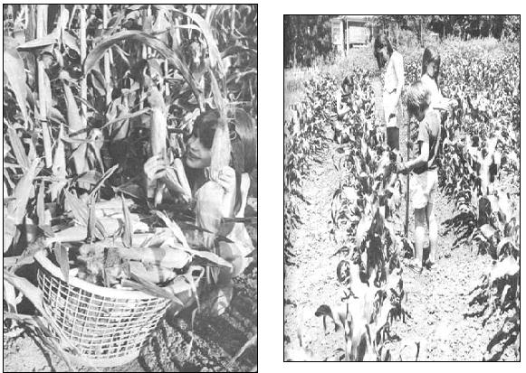

LEFT: Planting early helps guarantee big, luscious roasting ears like these. I sow my seed corn nine inches apart and do no thinning . . . so no seeds, time or labor are wasted. I reduce seed rot when the soil is still cool and wet by planting shallow and covering the kernels with only about an inch of dirt. For midsummer plantings?when there's danger that the seed kernels will dry out in the hot soil?I cover the individual seeds with two inches of earth. RIGHT ABOVE: This corn was planted in rows spaced 30 inches apart for greatest yield from least ground and cultivation with a hand push-plow. If you plan to cultivate your corn with a small tractor or rototiller, you may have to space your rows 36 or 42 inches apart. Keep the soil around the growing corn worked up loose an inch or two deep. When the surface of the earth dries and cracks, moisture can disappear fast from around the roots of the plants and damaging insects can hide and multiply in the opened dirt.